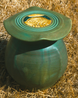
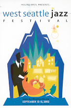

Past Events |
last updated on 2002-11-17-16:20 -0700 (pdt) activity A021001 |
- November 1-2, 2002
- Dias de la Muertas Celebration
Earthworks - The Pottery School of West Seattle
- Sunday, October 13
- noon to 3:00 pm
Glaze Technique Workshop
- October 4 through October 31, 2002

- A Garden of Earthy Delights
- Artist-in-Residence Featured Showing
Artist reception, October 4, 6:30pm
Earthworks - The Pottery School of West Seattle
4437 California Avenue SW
Seattle, WA 98115
206.933.6350
- Tuesday, September 3, and the seven following Mondays, September 9 through October 21,
- 6:15 pm to 8:45 pm at Earthworks
Adult Beginning Wheel Class
at Earthworks - The Pottery School of West Seattle

September 14-15, 2002created 2002-10-03-23:55 -0700 (pst) by orcmid
$$Author: Vicki $
$$Date: 03-08-10 11:59 $
$$Revision: 17 $